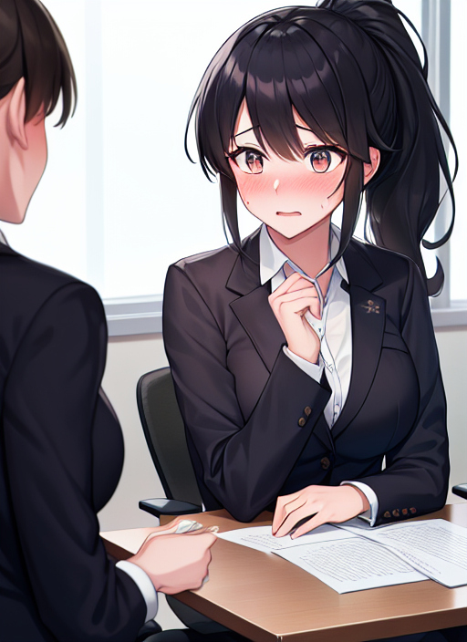

変わってしまった第1希望
「はい！よろしくお願いいたします！失礼します！……よっしゃー！」
就活のシーズンも終盤に差し掛かったあたりだろうか。
俺こと瀬戸碧月はやや出遅れはしたものの、たった今ようやく内々定をもらうことができた。
「ふう、これで人心地つける」
第一希望の超大手、日ごろ世話になる機会も多く思い入れが強いあの会社に、まさか俺が入れるだなんて想像もしてなかったけど。
「就活頑張った甲斐があったなー」
言うほど忙しかったわけではないが、やはり開放感がある。
なんだかんだ自身の将来が掛かっていたのだから、どこか無意識に緊張していたのだろう。
今日は大学もないし、久しぶりに羽を伸ばそうかと思った矢先。
「うわっと、あ、なんだアラームか……」
けたたましくアラームが鳴り響き、完全に油断していた俺はすっかり驚かされてしまった。なんとも恥ずかしい。
「なんのアラームだっけ？……あっ、説明会か」
そうだった。今日は滑り止めに受けるつもりだった会社の説明会がある。
「うーん、調べた限りではあそこも悪くはないんだけど……」
つい先ほど、俺は第一希望の会社から内々定をもらったのだ。今さら別の会社の説明会に出ようとは思わない。
「断りの電話しなきゃな……うん？」
会社の電話番号を確認するために説明会の概要をチェックしてみると、そこには『当日キャンセル厳禁』とある。
「いや、気持ちは分かるけど、面接受ける気もないやつが参加したって誰も得しないだろ……」
あまり気乗りしないが、具合が悪いとでも言って適当に断ろう。
そう思い俺は会社宛てに電話を掛けた。
『お待たせしました。TS株式会社でございます。』
「あ、お忙しいところ申し訳ございません。私、慶早大学4年生の瀬戸と申します。本日体調が優れず、会社説明会を欠席しようと思い電話しました」
『そうでしたか。しかし概要にございます通り、こちらで行う説明会の当日キャンセルは固くお断りしておりまして』
「……」
『ご容態にかかわらず、私どもとしましてはぜひ瀬戸様にご出席願いたいのですが』
これはなんということだ。確かに俺のしていることは褒められたことではないかもしれない。第一志望の会社に内々定を出されたがためとはいえ、仮病を使ってドタキャンを試みているのだから。
とはいえ、それは俺自身想定できたものというわけでもない。
今の俺みたいな就活生は他にいくらでもいるだろうし、まして体調不良を理由に欠席しようとしている就活生に対して一般的な会社は、はたして出席を促すものだろうか。
この会社は外れだな……。
そう見切りを付けて、俺はやはり欠席の意を主張しようとした……そのとき。
『瀬戸様、あなたは実は、体調に問題がない……そうですよね？』
本当になんという会社だろう。こんな人を受付に配置するだなんて、やはりろくな会社ではない。
これならばいくらデタラメを言ったところで俺の良心は傷つかない。
「『はい、俺は実は、体調に問題がないです』」
…………。今、俺はなんて言った？
『やはりそうでしたか。仮病なんて使ってはいけませんよ。本日の説明会、あなたは実は、出席したくて仕方がないのですから。心よりお待ちしています』
電話が、切られた。
なぜだろう。出席する必要なんてない。今さら滑り止めの、しかもあんなイメージの悪い会社の話なんて聞いてやる価値もない。
そう頭で理解していても、説明会に『出席したくて仕方がない』。
……まあ、別に就活の終わった今、時間なんて腐るほどあるし少しだけ付き合ってやろうか。部活も今日はないし。
いまいち乗り気になれないが、俺はリクルートスーツに着替え始めた。
「まあ、そこまで遠くもないしな……」
本当に、どうしてこんな気分になるのか。
まったく行きたくないのに、行かなければならないような気になってしまっている。
不思議なジレンマを感じつつ、俺は足早に説明会に向かった。
「瀬戸様ですね……はい、確認いたしました」
説明会はTS株式会社の本社で行われているらしい。会社のビルに着くやいなや、俺は個室に案内された。
「すみません。失礼ですが、他の就活生はいらっしゃらないんですか？」
我ながら失礼な質問だが、この会社に遠慮なんていらない。そう思い俺は気になったことをそのまま言葉にして発する。
「他の学生さんたちも、それぞれ個室に案内されてますよ」
マイナーとはいえ、業績は悪くない……どころか、近年急上昇中の会社だ。さすがに入社希望者がまったくいないというわけではないらしい。
それにしても社員が一対一で会社説明とは。就活生を大事にしているとでも言えば聞こえはいいが、これはとんでもなく非効率的である。
これはいよいよ、俺の会社を見る目がおかしかったと考えざるを得ない。
「それでは、改めまして本日は我が社の説明会にご参加いただき、誠にありがとうございます」
そう言って頭を下げる受付の女性は、おそらく電話のときの人だ。というか、この人が説明するのか。ますます会社のイメージが悪くなりそうだ。
「さて、本来でしたら会社の説明をしてから後日面接を行いたいところですが」
そんな下らないことを考えている俺の気も知らずに、女性は飛びっきりの笑顔で話を続ける。
「瀬戸様は慶早大学で、しかも行政書士の資格をお持ちだとか」
本題に入る前に雑談でもして肩の力を抜いてもらおうってことなのか知らんが、あいにくこっちはもう興味なしなのだ。無愛想な頷きで返す。
「大変優秀な頭脳をお持ちのようで。我が社にはもったいないくらい」
まったくその通りである。こんなとこに入るつもりはさらさらない。
「部活動はなにか？」
「バスケ部に入ってます」
そう答えると、女性はとても驚いたような顔をし、手で口を覆った。
その大仰な仕草がなんだか気に入らず、俺の口調がいささか荒くなる。
「あの、なにかおかしなことでも？」
「いえ、その、どのようなご活躍をされてたのでしょう？」
……こいつは俺を見て『バスケなんてできそうにない』とでも判断しているのか？
これほど失礼な社会人がいるのだろうか。はらわたが煮えくり返ってくる。
「これでもスタメンとして活躍してましたよ、バスケはけっこう自信ありますから」
はっきりと言い切ってやったのだが、女性は俺の返事など意に介さないようで、なにか含みのあるような微笑を浮かべ、両手を胸の前で叩いた。
「それはすごい！実はあなたは、私と同じくらいの身長しかないのに！……そうですよね？」
……？なにを言っている？この女性の身長は160cmもないくらいだ。
対して俺の身長は174cmほど。どう見ても同じには映らないだろう。
「『はい、俺は実は、あなたと同じくらいの身長しかありません』」
…………？口が勝手に？ってなんだこれ！？目線が！？
「うっ、くぉ！？」
「はーい、私の身長は156cm。今のあなたもだいたいそのくらいですよ」
なんだ！？どういうことだ！？身長が、縮んだ……！？
「なんだこれは！？どうなって……！？」
「落ち着いてください。あなたは実は、自分で思っているより冷静です……そうですよね？」
取り乱すこともなく朗らかに話す女性。もしかしなくても、こいつが元凶であるらしい。
怒鳴り散らしてすぐさま元に戻すよう言ってやろうとしたが、しかし頭で浮かべた文字列は、どうしてか俺の口から出てはこなかった。
「『はい、俺は実は、自分で思っているより冷静です』」
なぜか俺の口は女性の言葉をおうむ返しにするのみ。
馬鹿な。目の前のこいつに言ってやろうとしたことが言えない。
それどころか言葉の通り頭にこもっていた熱が変に冷めてきてしまった。
「いい子ですね。ではそろそろ会社の説明をしていきましょうか」
動揺を隠しきれない俺に対し、女性は淡々と会社の説明に入る。
「まあ事業内容はいろいろです。別に今知る必要はありません。瀬戸さんに興味があろうがなかろうが、どうせあなたには我が社に入社してもらいますから」
なにを勝手なことを。こんな胡散臭い会社に入るわけがないだろう。
「あ、でも会社名の由来だけは話しておきますね。TSというのは、性別を変更するってことです。まあ優秀そうな男の子を女の子にしてから入社させてる感じです」
さらりと非現実的なことを言ってのける女性。
しかし既におかしなことを身に受けてきた俺にとって、その話を笑い飛ばすことはできない。
「ふふっ、もう手遅れ。あなたは実は、女性の身体をしています……そうですよね？」
マズイ。どうやら先ほどのやり取りを思うに、女性の言葉の通りに返事してしまうとそれが現実になるらしい。
俺は男だ。女になんかなってたまるか。
「あっ、……や、…………は、『はい、俺は実は、女性の身体をしています』」
しかし俺の思いとは裏腹に、口は女性の思惑通りに動いてしまう。
「……ぐっ！」
身体が熱い。捩れるような痛みとともに、身体の至るところが変わっていくのを感じる。
短くしていた髪の毛がさらりと肩に掛かるのを感じる。
スーツの下から胸部が盛り上がっていくのを感じる。
股関節に言いようのない喪失を感じる。
「くすっ、ほら、鏡」
部屋のどこかに置いてあったのか、女性が姿見を持ってきた。そこには憎たらしい女性とは別の、リクルートスーツに身を包んだ1人の女性が写っていた。
濡れ羽色の髪、細かくさらさらとして肩まで伸びたポニーテール。
まつ毛は長く、眉は細く弧を描き、目はぱっちりと大きく、顔は小さく丸っこく。
肌はきめ細かく、透き通るような白さに。
薄く化粧まで施され、気づかないうちに服装まで女子就活生のそれに変わってしまっていた。
「ちょっと面影は残ってるわね。あ、内股になってる。ふふっ、可愛らしい」
「っ！」
女性の骨格によるものなのだろうか。自分の足が無意識に内股になっていたことに驚く。
言われて慌てて股を外側にやる俺を見て、女性は何か思いついたように両手を叩いた。
「えー、つまらないなぁ。あ、そうだ、あなたは実は、女性的な仕草をします……そうですよね？」
「『はい、俺は実は、女性的な仕草をします』」
すると、足がすっと内股に戻り始めてしまった。
なっ、どうして！
「いいわねー、自然に女の子っぽくできてる。手で口を覆ってるとことかも可愛いですよぉ」
言われてから気づいた。驚きを隠そうとするその様はまさに女性らしい。
「じゃあ次は喋り方ね。あなたは実は女性らしい喋り方をします……そうですよね？」
「んっ……あ……は、『はい、俺は実は、女性らしい喋り方をします』」
いくら抵抗しても口は女性の意のままに動いてしまう。
なんとか逃げ出さないと。そう思い女性の仕業かすっかり意思の通らなくなった身体を奮い立たせようとすると、
「よし、じゃああなたは実は、これから私に自己紹介をします、そうですよね？」
「……『はい、わたしは実は、これからあなたに自己紹介をします』」
意思に反して身体が自然と立ち上がり、おへその位置で両手を留めて、わたしは自己紹介を始めることになった。
「慶早大学4年生の瀬戸京華と申します。……って、そんな！わたしの名前はっ！」
「名前は？」
名前は……あれっ？わたしの名前って、なんだったっけ？名前……名前……。
「瀬戸……京華……です」
わたしの名前、間違ってないよね？男の子なのに女子みたいって昔はよくからかわれてたっけ。
「そっか、京華ちゃんか。京華ちゃんはなにか部活動とかしてたの？」
なんだろう、なんだか頭がもやもやする。記憶を辿ろうとすると形を変えた別のなにかを掴まされてるみたいな……。
「京華ちゃん？人の話はちゃんと聞くものだよ？」
「っ！す、すみませんっ！」
いけない。別のこと考えてる暇があったらしっかり返事できるよう気を配らなきゃ。えっと、部活……部活……。
「部活は女子バスケ部で、マネージャーをしてました」
なぜだろうか、わたしの返答を聞いた途端、女性はとても嬉しそうな、それでいて薄気味の悪い笑顔を浮かべた。
「部活ではなにを学んだの？」
「はい。部活では部員の皆さんが試合に集中できるよう影ながらサポートすることで、役割をきちんとこなして組織を強くしていくことを学びました」
いろんなことがあった。バスケが好きでマネージャーとして入部したはいいけど、ここまで裏方がたいへんだとは思いもしなかった。
でも辞めようとは思わなかった。わたしはスポーツが苦手。160cmもないわたしじゃバスケをしてもチームに迷惑だ。それでもバスケが好きだから、ぜったいにみんなの力になるんだって決めていた。だからマネージャーとして部活を盛り上げていこうって頑張ったんだ。
どれだけ力になれたかわからないけど、わたしなりにやれたんじゃって思っている。
「わたしのそういった献身的な能力は、御社でも役に立つと思っています！……って、だから違うってばっ！」
なんなの今の記憶は！？わたしは男子バスケ部のスタメンで活躍して、それで……。でも、思い出の中のわたしは女の子で、運動が苦手で……。
「わたしは男の子だったはずなのに……きゃっ！？」
身体がなぜか女性の横暴を拒めないまま数分、わたしの脳内は男子としてのアイデンティティに警鐘を鳴らし続けている。
髪を梳いてもらうと気持ちいい。胸を撫でられると高ぶる。股間を触れられると……。
「ね、ところでさ？高校時代ってセーラー服だった？それともブレザー？」
突然話を変えてきた女性。困惑しながらもわたしは過去の記憶をたどって答える。
「えっと、セーラー服でした」
「へー、京華ちゃんのセーラー服姿、きっととびっきり可愛かったんだろうなぁ！」
昔の自分を思い出し、なんだか無性に恥ずかしくなってきた。
「そ、そんなことないですよ。セーラー服ってブレザーよりスタイル出やすいから、ダイエットも大変でしたし……あれ？」
わたし、ダイエットなんてしてたっけ？……うん、してたような気がする。甘いものが好きだから、食べた分ちゃんと動かなくちゃって、それで……。
「い、いやっ！そんなことないっ！わたしは男の子！ダイエットなんてしなかった！セーラー服なんて着てない！女の子じゃないっ！……ひゃっ！？」
「揉み応えあるわねー。それで、どんな男の子がタイプだったの？」
わたしが女子であることを否定すると、撫でられるものとは違う強い刺激が胸を襲った。揉まれている……わたしの胸が。痛みではないこの感覚は、女性ならではの快楽なのだろう。
「……う……んっ…」
「で？どうだったの？」
「へっ？」
「好きな男の子の話。どんな子がタイプだったの？」
「は、はい。えーっと」
この心地よい刺激に慣れてきた頃には、わたしは過去を淀みなく思い出せるようになっていた。
わたしの好きだった男の子……高校のときのクラスメイト、運動ができて明るい男の子。最初はただ羨ましかっただけだった、わたしは運動が苦手だから。
でもだんだんとそれが恋心になっていって、こんなわたしじゃ彼の隣に立てないからってせめて勉強だけでもって頑張って……。
「そっか、京華ちゃんはその子に振り向いてほしくって頑張ってたのね」
「はい、彼は女子の間でも人気があって、でもわたし、なんとか彼と付き合いたくって……」
あの頃からファッションとか髪型とか、いろいろ気にするようになった。さりげなく彼の好きな髪型を聞いてみて、それに合わせてみちゃったり。
「もしかしてそれが今の髪型？」
ええっと……たしかそうだった気がする。いや、でも……。
「あーもう、埒があかないなぁ。実は、その彼の好きな髪型が今の京華ちゃんの髪型です、そうですよね？」
「『はい、その彼の好きな髪型が今のわたしの髪型です』」
そうだ。彼はポニーテールが好きだって言って、わたしはそれに合わせたんだった。
自分で言うのもなんだけど、結構似合ってると思う。今となってはお気に入りの髪型だ。
「彼のためにかぁ。いじらしいなぁ京華ちゃんは」
「えへへ、なんだか恥ずかしいです」
「うん？でも今もその髪型を続けてるってことは、ひょっとして京華ちゃんはその子と晴れてお付き合いを？」
「はいっ」
「おー、こんな現実改変の仕方もあるんだ」
「はい？」
「いや、こっちの話」
その後も女性は朗らかに話しかけてくる。だけどなんでだろう。会話をするたびに、わたしがわたしでなくなっていっちゃうような……。
「じゃあさ、他に彼の好みってなにかあるの？」
うーん、ほかになにかって言ったら……。
「前に出すぎない献身的な女性がいいみたいです。なのでわたし、大企業みたいなところで就活はしてないんです」
「まあそうよねぇ、やっぱ女性は前に出過ぎず献身的じゃないとね。だったら、うちの会社くらいがぴったり！」
「はい！」
そう。わたしは女性だから、間違っても前に出すぎたりしちゃいけない。
誰かを支える裏方として行動しなくちゃいけない。
だから大きな会社で就活するなんて絶対にダメだ。
わたしは女の子なんだから。
「よし、じゃあ弊社の待遇について話すよ。まず京華ちゃんは大学4年生だけど、これから毎日会社に来て、きっちり雑務と研修をしてもらいます」
「はい！頑張りますっ！」
嬉しい。わたしみたいな若輩者がもうお仕事のお手伝いをできるなんて。
「研修費は1日たったの千円、来たら私に払ってね」
そうだ、お仕事を教えてもらうんだから当然お金を払わなきゃいけない。
でも、1日分でたったの千円……なんて良心的なんだろう！
「あと、社員の人の言うことは絶対だからね？男性に求められたらきっちり応じること、女子として当然のことね」
「はいっ！わたしは女子社員としての責務をまっとうします！」
「うん、いい返事だ」
「入社後のお給料は月に10万円くらいかな。あ、でもボーナスには期待しないでね、会社の繁忙が第一だからね」
「わたしみたいな者がこの会社で働けるというだけで幸せです！」
お給料なんかよりこの働きがいに魅力があるのだ。わたしのすべてをこの会社に捧げる……それこそが今までわたしが生きてきた意味。
「最後に念のため……実はあなたの第一志望は弊社……そうですよね？」
「『はい、わたしの第一志望は御社です』」
わたしはこれからここで女性社員として精一杯頑張っていくんだ。わたしが培ってきたすべてを活用して、この会社を発展させていかなくちゃいけない。そしてそれこそがわたしの喜び！心からそう思えるんだ！